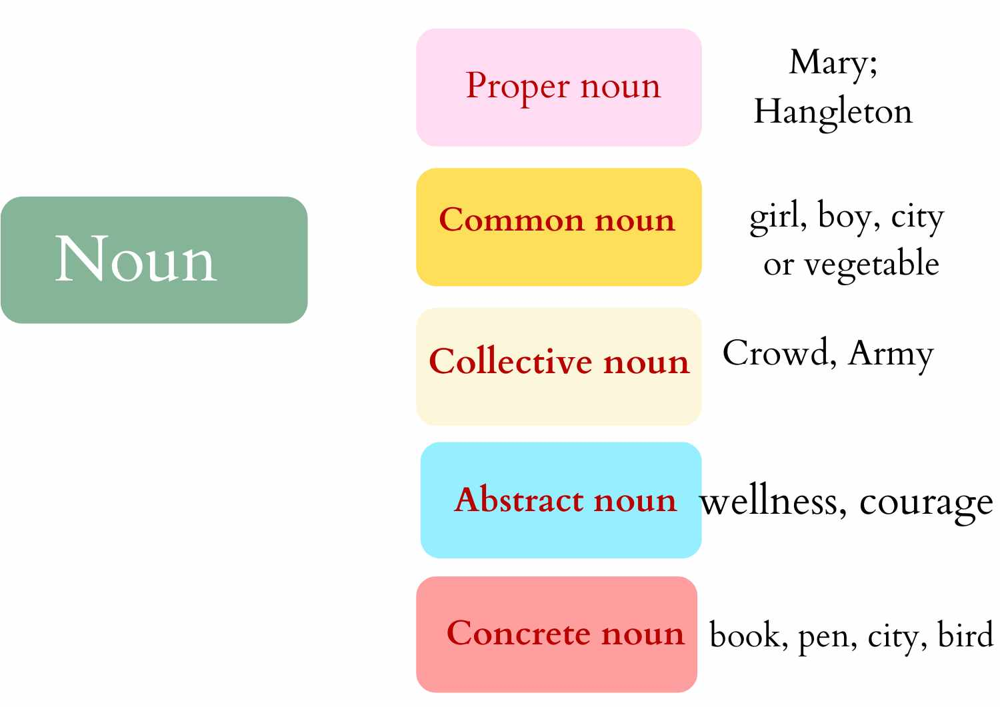

Earlier we explored Nouns which are known as naming words because they help us name things.
Today we will look at a special kind of nouns called GENDER NOUNS which are related to people,
animals and birds.